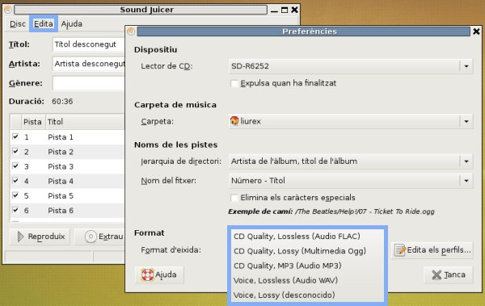

Materials curriculars INF
2.2.2. Extracción de pistas en distintos formatos
Temporalización: 30 minutos
Extrae la misma pista que en el apartado anterior pero utilizando los formatos WAV, FLAC i MP3. Antes de extraer la canción en cada formato lo has de seleccionar desde el menú Editar / Preferencias

¿Qué formato ocupa más espacio en disco?
WAV
| |
FLAC
| |
MP3
| |
¿Porqué el archivo en formato FLAC ocupa más espacio que los generados en MP3 y OGG?
Porque no utiliza compresión.
| |
Porque no hay una pérdida de datos como en los formatos MP3 y OGG.
| |
El archivo generado en FLAC ocupa menos espacio que los generados en MP3 y OGG.
| |
Este artículo está licenciado bajo Creative Commons Attribution-NonCommercial 2.5 License
Formació del Professorat - CEFIRE